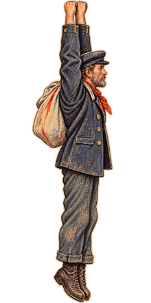
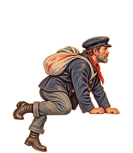

Sailor hanging from an edgesailor-hang220 × 440 · top centre (his hands)Sized PNG · Original
Sailor pulling himself upsailor-pullup260 × 300 · ledge line 25% up from the bottom, centredSized PNG · Original